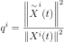
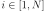
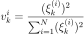
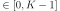

KarhunenLoeveValidation¶
(Source code, png, hires.png, pdf)
{kind=link}
{kind=link}
- class KarhunenLoeveValidation(*args)¶
Karhunen-Loeve decomposition validation services.
- Parameters
- sample
ProcessSample Observed (or learning) sample
- result
KarhunenLoeveResult Decomposition result
- trend
TrendTransform, optional Process trend, useful when the basis built using the covariance function from the space of trajectories is not well suited to approximate the mean function of the underlying process.
- sample
Examples
>>> import openturns as ot >>> N = 20 >>> interval = ot.Interval(-1.0, 1.0) >>> mesh = ot.IntervalMesher([N - 1]).build(interval) >>> covariance = ot.SquaredExponential() >>> process = ot.GaussianProcess(covariance, mesh) >>> sampleSize = 100 >>> processSample = process.getSample(sampleSize) >>> threshold = 1.0e-7 >>> algo = ot.KarhunenLoeveSVDAlgorithm(processSample, threshold) >>> algo.run() >>> klresult = algo.getResult() >>> validation = ot.KarhunenLoeveValidation(processSample, klresult)
Methods
Compute residual field.
Compute residual mean field.
Compute residual standard deviation field.
Plot the quality of representation of each observation.
Plot the weight of representation of each observation.
Plot a model vs metamodel graph for visual validation.
Accessor to the object's name.
getId()Accessor to the object's id.
getName()Accessor to the object's name.
Accessor to the object's shadowed id.
Accessor to the object's visibility state.
hasName()Test if the object is named.
Test if the object has a distinguishable name.
setName(name)Accessor to the object's name.
setShadowedId(id)Accessor to the object's shadowed id.
setVisibility(visible)Accessor to the object's visibility state.
- __init__(*args)¶
- computeResidual()¶
Compute residual field.
- Returns
- graph
ProcessSample The visual validation graph.
- graph
- computeResidualStandardDeviation()¶
Compute residual standard deviation field.
- Returns
- stddev
Field The residual standard deviation field.
- stddev
- drawObservationQuality()¶
Plot the quality of representation of each observation.
For each observation N we plot the quality of representation:

with 
- Returns
- graph
Graph The visual validation graph.
- graph
- drawObservationWeight(k=0)¶
Plot the weight of representation of each observation.
For each observation we plot the weight according to the k-th mode using the projection of the observed sample:

- Parameters
- kint, , default=0
Mode index
- Returns
- graph
Graph The visual validation graph.
- graph
- drawValidation()¶
Plot a model vs metamodel graph for visual validation.
- Returns
- graph
GridLayout The visual validation graph.
- graph
- getClassName()¶
Accessor to the object’s name.
- Returns
- class_namestr
The object class name (object.__class__.__name__).
- getId()¶
Accessor to the object’s id.
- Returns
- idint
Internal unique identifier.
- getName()¶
Accessor to the object’s name.
- Returns
- namestr
The name of the object.
- getShadowedId()¶
Accessor to the object’s shadowed id.
- Returns
- idint
Internal unique identifier.
- getVisibility()¶
Accessor to the object’s visibility state.
- Returns
- visiblebool
Visibility flag.
- hasName()¶
Test if the object is named.
- Returns
- hasNamebool
True if the name is not empty.
- hasVisibleName()¶
Test if the object has a distinguishable name.
- Returns
- hasVisibleNamebool
True if the name is not empty and not the default one.
- setName(name)¶
Accessor to the object’s name.
- Parameters
- namestr
The name of the object.
- setShadowedId(id)¶
Accessor to the object’s shadowed id.
- Parameters
- idint
Internal unique identifier.
- setVisibility(visible)¶
Accessor to the object’s visibility state.
- Parameters
- visiblebool
Visibility flag.